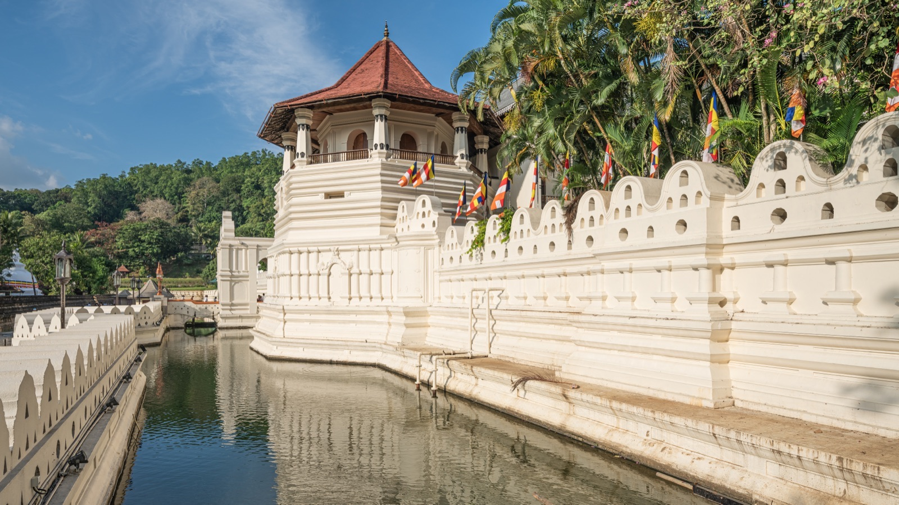
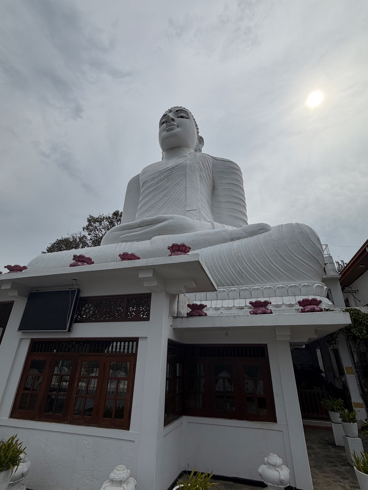

Nice place but not worth it if you’re only staying a night or two as it’s about an hour and a half drive out of the way of everything else on challenging roads. Says they accommodate all food allergies and preferences but I had a really, really hard time with celiac/gluten-free options and the staff understanding.
"Mata Paan Piti kema wisai"Wheat flour is poisonous for me
"Mama paan piti kanne nee"I do not eat wheat flour
thiringu piTi / haal piTiWheat flour / Rice flour
Safe Local Dishes
Rice and curry (naturally GF)
String hoppers & hoppers (rice flour)
Pittu (rice flour + coconut)
Dhal curry, fish curry
Dosas (at South Indian restaurants)
Sambols (coconut-based condiments)
Avoid
Kottu roti (made with wheat roti)
Roti / paratha (wheat flour)
Papadams (often wheat now)
Vada (shared oil with wheat items)
Lamprais (banana-leaf rice wrap — check for flour)
Grocery Stores
Cargills — GF staples available
Keells — rice flour and lentils
No dedicated free-from aisles
Tips
Celiac is not well understood in Sri Lanka. Small family-run places and South Indian restaurants (dosa shops) are safest. Always speak directly to the chef, not the waiter. Carry a translation card in Sinhala.
Score Breakdown
Dedicated GF restaurants
Menu labeling
Staff knowledge & safety
Density of GF dining
Grocery availability
4/10Overall GF Score
Difficult
GF Friendly Restaurants
4 spots
GF Score 4/5 2/5 Hotel
Balaji Dosai
GF Options
South Indian Vegetarian
Went here
GF Score
Safety Notes
GF dosas — cheese dosa was SO good! And MASSIVE! South Indian dosa restaurant with naturally gluten-free rice-flour dosas. Your safest bet in Kandy.
What to Order
Cheese dosa, plain dosa, masala dosa. All made with rice flour batter.
Vegetarian/vegan fusion spot with jackfruit burgers, wraps, and pizzas. Some items may be adaptable but cross-contamination risk is high with wheat-based menu items. Communicate celiac needs clearly.
What to Order
Ask about rice-based dishes. Avoid the wraps, pizzas, and burgers unless confirmed GF.
Hideout Lounge
GF Options
International / Bar
Traveler recommended
GF Score
Safety Notes
GF options but seems limited based on FMGF reviews. Staff will try to accommodate with advance notice. Warning: Somersby Beer is NOT gluten-free in Sri Lanka.
What to Order
Ask staff about current GF options — call ahead if possible. Stick to naturally GF items like grilled meats or rice dishes.
Award-winning fusion restaurant with panoramic views of Kandy. Some GF options available. Higher-end restaurant likely more receptive to dietary requests — communicate celiac needs directly to the chef.
What to Order
Opt for rice-based Sri Lankan dishes or grilled proteins. Ask about sauces and marinades for hidden wheat.
Getting Around
Tuk-tuks
Ubiquitous and the easiest way to get around Kandy. Negotiate the fare before you get in or use a metered tuk-tuk.
LKR 200–400 in-city (~$0.65–$1.35)
Public Buses
Available but crowded with no A/C. Best for budget travelers comfortable with packed rides.
Very cheap, routes across the city
PickMe App
Sri Lanka’s ride-hailing app works in Kandy. More transparent pricing than negotiating with tuk-tuks.
Download before arrival
Scenic Train
The famous Kandy–Ella route through tea plantations. Currently suspended due to cyclone damage. Normally 7 hours.
Book at seatreservation.railway.gov.lk
Inter-City Distances
From Negombo/airport: ~2–3 hours by private vehicle. To Sigiriya: ~2 hours by car. The scenic train to Ella is currently suspended (cyclone damage) — normally book 30 days ahead at seatreservation.railway.gov.lk.
Landmarks & Must-See Spots
3 spots
Sri Dalada Maligawa (Temple of the Tooth)
Temple
Sacred temple housing the tooth relic of the Buddha. Sri Lanka’s most important Buddhist site. Entry: $18+ USD. Open 5:30 AM–8:00 PM. Dress code: cover knees and shoulders, remove shoes.
Kandy Lake area
Went here

Sri Maha Bodhi Viharaya
Temple
Giant buddha statue — very cool place. Need to cover knees and shoulders like other temples. Free entry, just asks for donations. A lot quieter and less crowded than the tooth relic.
West of Kandy centre
Went here

Municipal Central Market
Market
Did not go — it was too hot and it was a Saturday so too crowded (locals preparing for national holiday). Worth a visit if you have cooler weather or a weekday morning.
Kandy city centre
Traveler recommended
Things to Do
Tours & Experiences
New Giragama Tea Factory Tour
Free
Free guided tour through a working tea factory plus a tea tasting session. Learn how Ceylon tea is made from leaf to cup. A great half-day excursion from Kandy.
Stroll around Kandy Lake at sunset, then catch a traditional Kandyan dance performance at the Kandy Lake Club. The dance show features fire-walking, plate-spinning, and traditional drumming.
GF snack bars & emergency foodSafe GF options are very limited — always have backup
Essential
Refillable water bottleDo not drink tap water — refill at hotels or buy bottled
Essential
Medications & first aid basicsStomach remedies, anti-diarrheal, any prescription meds
Essential
Celiac dining card in SinhalaEssential — celiac is not well understood, show to chef directly
Sri Lanka
Type D / Type G power adapterSri Lanka uses a mix of plug types — bring a universal adapter
Sri Lanka
Insect repellent (DEET or similar)Mosquitoes are prevalent, especially in the evening
Sri Lanka
Modest clothing for templesCover knees and shoulders at all Buddhist temples — required entry
Kandy
Light, breathable layersApril is hot and humid (~30°C) but hill country evenings can cool down
Kandy
Compact umbrella or rain jacketApril brings intermittent showers — always have rain gear
Kandy
Sunscreen (SPF 50+)Strong tropical sun, especially midday
Kandy
Travel Tips
Always speak directly to the chef about celiac/gluten-free needs, not the waiter. Staff understanding is limited and miscommunication happens easily.
South Indian dosa shops are your safest bet for GF dining — dosas are made from rice flour and are naturally gluten-free.
Temple dress code is strictly enforced: cover knees and shoulders, remove shoes. Bring socks if the ground is too hot.
Negotiate tuk-tuk fares before getting in, or use the PickMe app for transparent pricing.
Somersby Beer is NOT gluten-free in Sri Lanka, despite being marketed as cider. Double-check all drinks.
The Temple of the Tooth gets very crowded. Visit early morning (5:30 AM opening) or late afternoon for a calmer experience.
What I’d Do Differently
Skip Madulkelle Tea and Eco Lodge for a short stay. It’s 1.5 hours on challenging roads each way, and the GF experience was really difficult — the staff didn’t understand celiac despite claiming to accommodate all food allergies. Not worth it unless you’re staying multiple nights.
Bring even more GF snacks than you think you’ll need. The options are genuinely scarce and you’ll be grateful for backup food.
Visit the Central Market on a weekday morning instead of a Saturday — the crowds and heat made it impossible.
Have a tip or comment?
Found a great GF spot in Kandy? I’d love to hear from you.